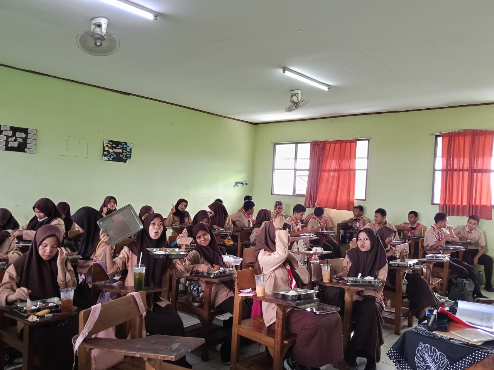

Sebuah gerakan kebersamaan yang mengajak warga sekolah untuk saling peduli dan berkontribusi bagi kebutuhan bersama.
Poe Ibu mengangkat semangat kebersamaan
melalui kontribusi sukarela dari warga sekolah.
Program ini bukan hanya tentang uang yang
dikumpulkan, tetapi juga tentang kepedulian,
gotong royong, dan rasa memiliki terhadap
lingkungan sekolah.

Beberapa nilai yang ingin dibangun melalui program ini.
Mengajak siswa untuk lebih peduli terhadap kebutuhan lingkungan sekolah.
Menanamkan semangat gotong royong dan saling membantu.
Mendukung kebutuhan sekolah dan warga sekolah melalui kontribusi bersama.
Berikut gambaran alur pelaksanaan Poe Ibu.
Siswa dapat memberikan kontribusi secara sukarela.
Petugas membantu mengumpulkan kontribusi setiap hari.
Dana dikelola untuk mendukung kebutuhan bersama.
Hasil pengumpulan dimanfaatkan untuk kepentingan sekolah dan kita bersama.
Tidak ada paksaan bagi siswa untuk memberikan kontribusi. Setiap orang memiliki kesempatan untuk berpartisipasi sesuai kerelaannya.